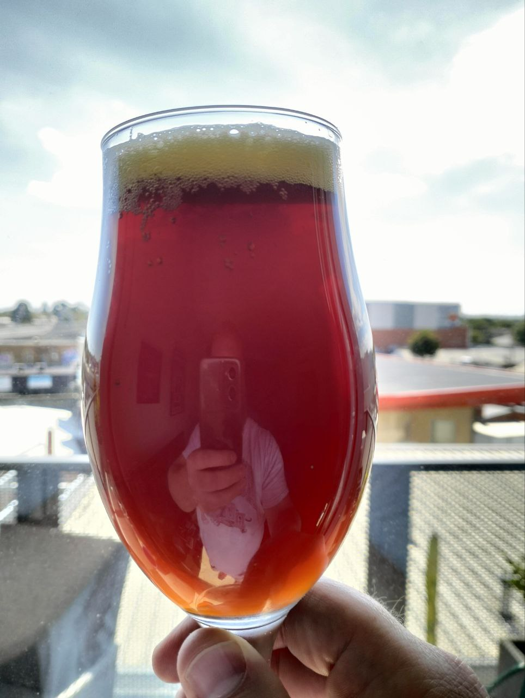
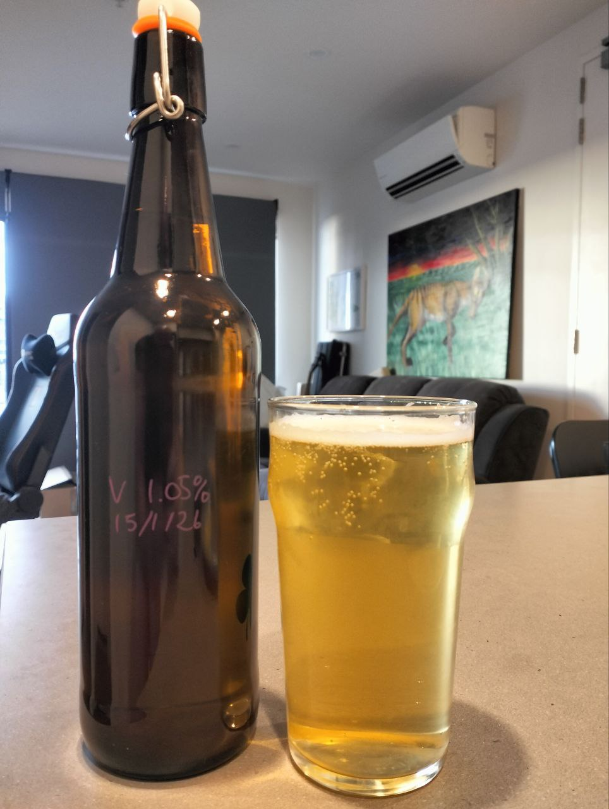
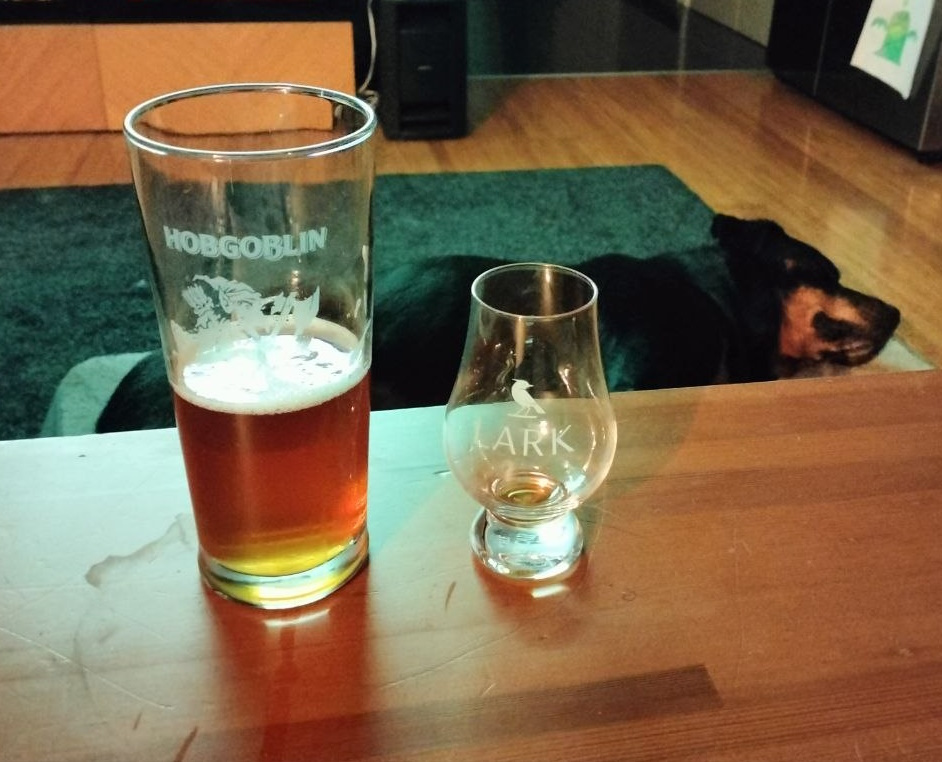
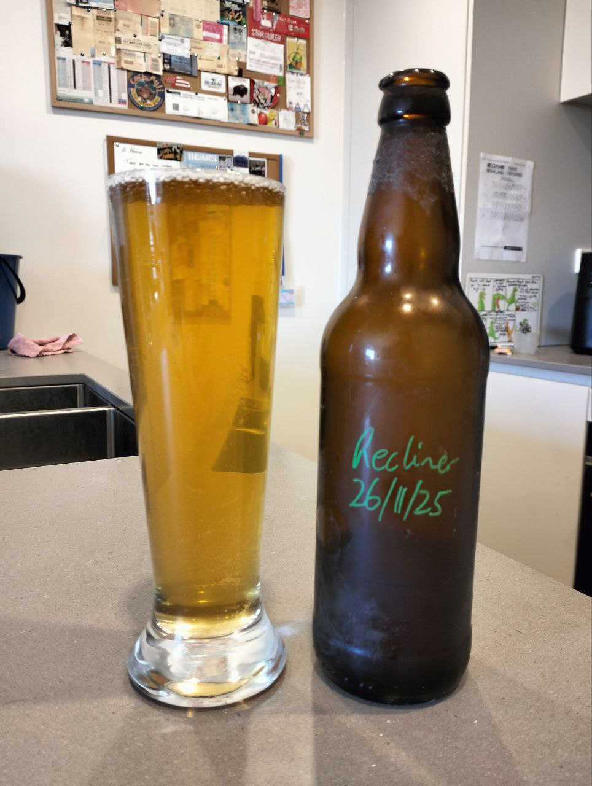
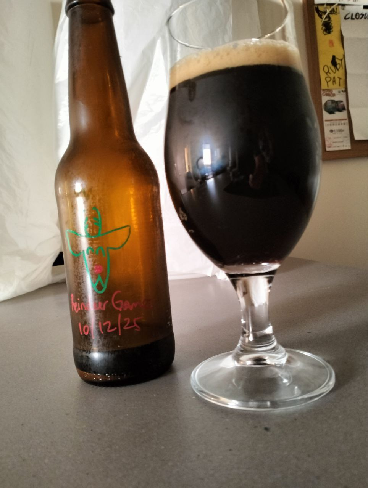
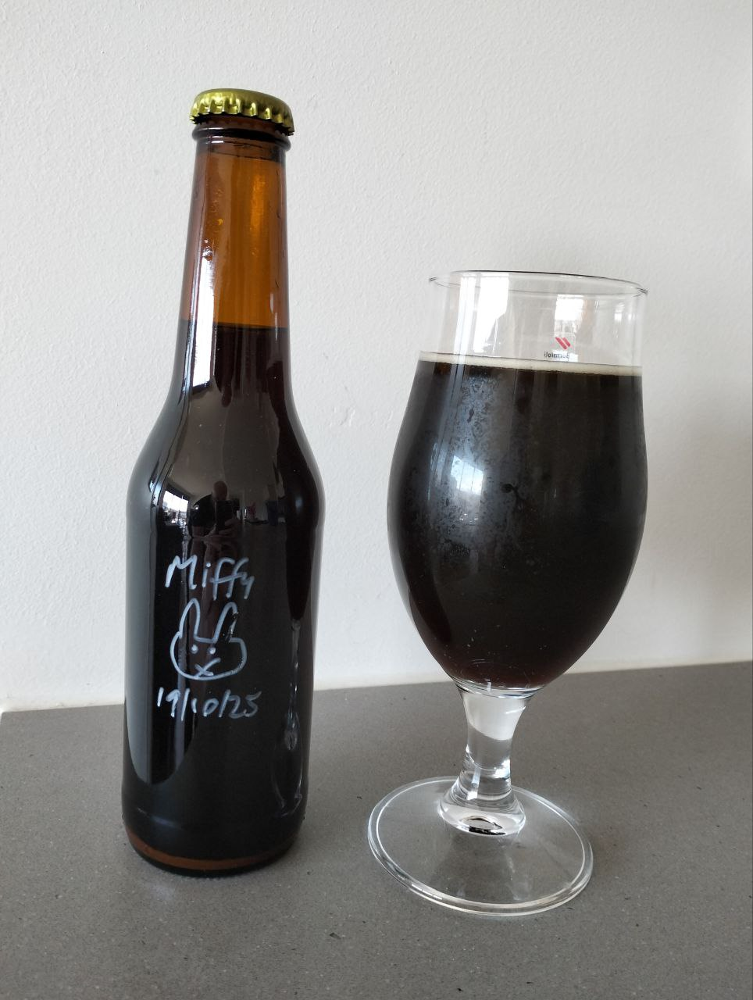
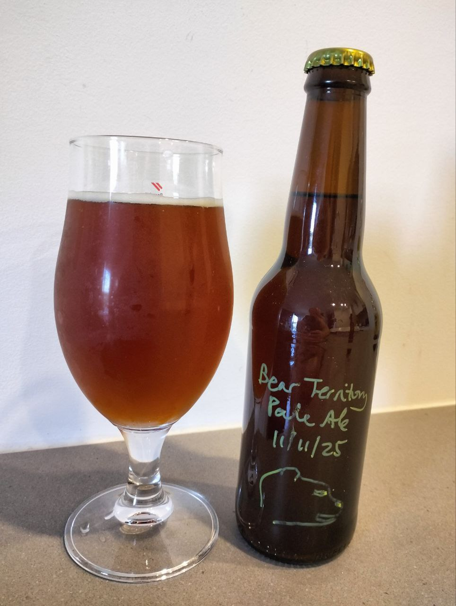
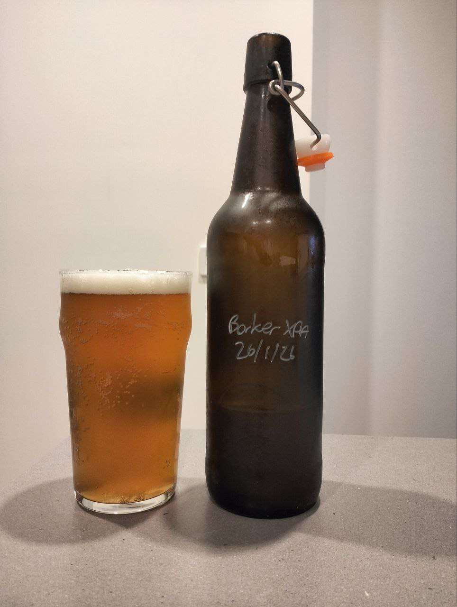
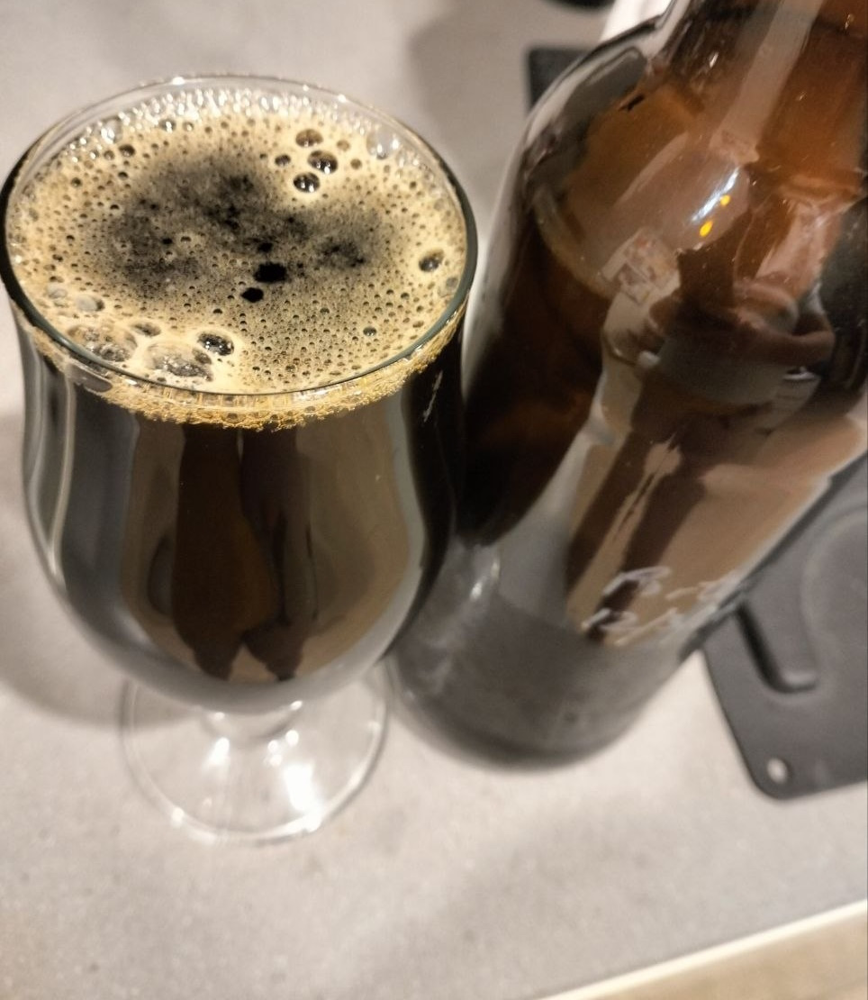

A malty, full bodied St. Patrick's Day special, featuring high-quality Maris Otter, red malts and traditional roasted barley. Sláinte!

A light, smashable traditional Australian beer with a smoky umami finish. It's like snogging the weird uncle who's done nothing but smoke meats and ciggies all arvo - and going back for seconds. Also available in full strength.

This pleasantly gentle IPA pairs Vic Secret with experimental CIP-076 hops from New Zealand for a tropical fruity flavour with an almost candy sweetness and a sharp finish.

The one that started it all! A simple, super-clear beer with a lime flavour courtesy of Motueka hops. Perfect for throwing back on a hot day. Kick your feet up with one!

Add a little Christmas to your day with this English-style stout, spiced with cinnamon, nutmeg, vanilla and sweetened with lactose. The next best thing to eggnog to give you that festive fireside cosiness!

This White Rabbit Dark Ale clone is unsurprisingly a dark ale, but more surprisingly has a West Coast hop kick to it as well. Very authentic to the original. This first beer I ever brewed at my place was based off Sundowner kid's recipe on Brewers Friend.

This clone of one of the greatest beers of all-time - Sierra Nevada Pale Ale - didn't turn out as hoppy as I'd liked due to a leaky fermenter lid, but it sure had a lot of malty sweetness to enjoy. This was based off Robert Mallard's recipe on Brewers Friend, but Sierra Nevada suggest an all-Cascade recipe of their own.

Balter XPA is one of the past decade's most successful Australian craft beers, and also became my unofficial "balcony beer" while holidaying in QLD. But they sold out to a multi-national, so there's no harm in brewing our own from Lethal's recipe on Brewers Friend. It was ok. I could do better to bring out those juicy hop flavours next time.

A rich, viscous and boozy dark beer with a generous cocoa addition, accented by mint from peppermint tea bags. Originally made by Brad from Grain to Glass, one of my favourite brewing YouTube channels.